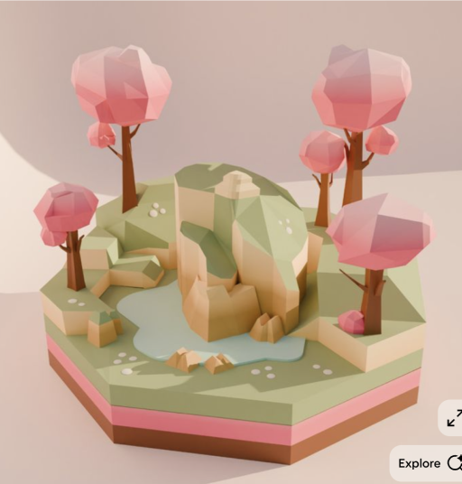
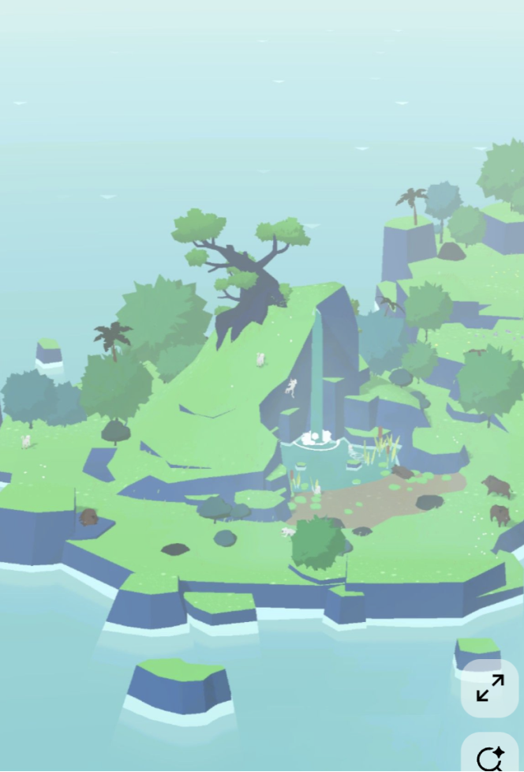

february 12, 2026
dear devdiaries,
Currently, we’re in the process of finalizing our script and developing the visual direction of our game. We’ve split our visual design team into two: one environment design team and one character design team. As a part of the environment design team, Raymond and I are working on deciding what the look and feel of the environment will be. This includes the stomach room and the main objects that can be interacted with in the room.
Here are a few inspiration images that we liked so far:


A challenge that we’ve been experiencing is that it’s difficult to properly design the stomach room without the script fully written and thought out. Initially, we thought it would be possible to design the visuals of the room before finalizing the script, but we’ve realized that it’s necessary to know exactly how the character will be interacting with the space in order to design it. These areas are a bit more interconnected than expected, because the script also relies on how we design the environment.
We’re working now on fully finalizing the script to move on to proper environment design.